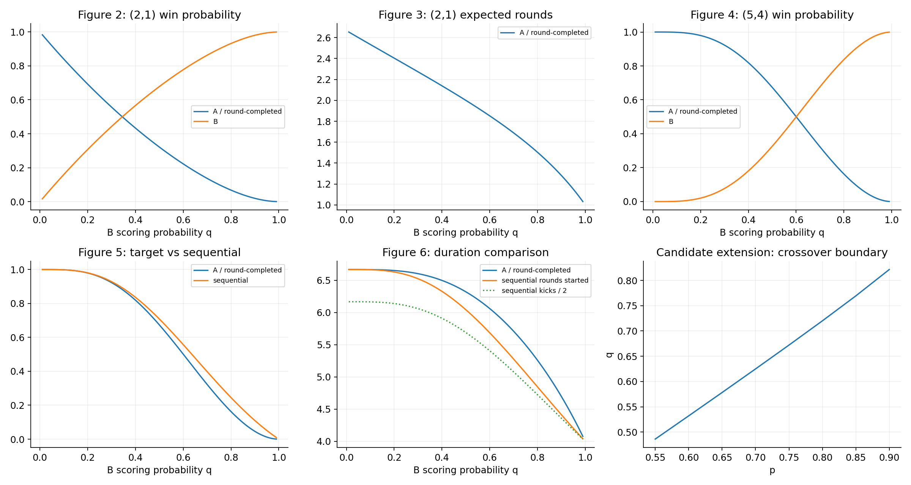

SENSITIVITY AT CURRENT p
Win probability across q
Blue: standard · orange: target · green: sequential. Behavioral settings remain active.
A laboratory for testing goal handicaps, kicking order, and uncertainty. Start with the paper. Follow the evidence.
Above this q, the (5,4) handicap is less balanced than the standard rule in the constant-probability model.
MODEL RESULT · NOT MATCH EVIDENCEBlue: standard · orange: target · green: sequential. Behavioral settings remain active.
A partial final round counts as a round started. Kicks are reported separately.
p and q range .50–.90. Blue: target has smaller |P(A)−.5| than standard; orange: larger. This map isolates the iid baseline and uses your selected targets. Unequal p,q may represent skill differences, so balance alone is not a fairness diagnosis.
February 2023 MPRA manuscript. Independent finite-state and negative-binomial solvers reproduce the model, while preserving discrepancies in the printed source.
Standard: five attempts each, stop after any kick when the other team cannot catch up; ties after five pairs enter sudden death.
Round-completed (m,n): continue until a team reaches its goal target. Complete the pair. If both reach their targets in that pair, start sudden death on the next pair.
Sequential: stop immediately at the first target. B may not take the final kick. There is no sudden death.
ABBA / Catch-Up: experimental changes to standard attempt-limited rules, including sudden death. ABBA reverses the first team every pair. Catch-Up makes the sole unsuccessful team first next pair, alternating on ties.
Sudden-death decisive probability d = p + q − 2pq. A wins with p(1−q)/d; the expected duration is 1/d pairs.
For (2,1), P(A) = p²(1−q)² / [d(p+q−pq)]. Expected rounds = (2p+q−3pq) / [d(p+q−pq)].
The general solver partitions outcomes into A hitting first, B hitting first, and equal hitting rounds followed by sudden death.
Strategyproofness in the paper applies to independent fixed success probabilities and a fixed kicking order. Deliberately missing cannot improve the race to a fixed target. It is not proved for every hypothetical behavioral extension here.
Table 4 fixes q=.60 for every target pair; it does not use each row's balancing q.
Audit findings: the printed Proposition 2 upper bound max(r,m−1) must be min(r,m−1) for B-first events. Table 3's (3,2) balance point is .494377, rather than .50 to two decimals. The narrative mistakenly describes q=.60 as balancing (2,1); its balancing value is .344766.

Figure 6 shows both rounds started and kicks / 2 for sequential play, since the manuscript's sequential duration convention is ambiguous.
Download figure data · Figure 1: ten-state (2,1) chain · Exportable figures PDFMinimize worst absolute win bias over a finite scenario grid, subject to a duration limit. An uncertainty set is a research assumption; it is not supplied by the manuscript.
Candidates: standard ABAB and 1 ≤ n ≤ m ≤ largest target. Equal targets are retained as controls. A minimum target prevents the optimizer from reducing the contest to a short race. Each grid result is exact to floating-point accuracy; the optimum is only for these nine scenarios.
Precomputed finite-scenario search: equal base ability .75, first-slot logits {0,.1,.2}, trailing penalty .1, independent per-shootout Gaussian team shocks σ=.15. Five rules compete using 6,000 contests per scenario, seed 20261014+i. Simultaneous 95% Hoeffding bounds account for all 15 estimates.
Duration bounds apply to min(rounds,40), not uncapped duration. Zero observed censoring does not certify an infinite-horizon expectation. This is a candidate ranking; an independent 30,000-contest holdout tests the selected rule at the largest effect.
Download Monte Carlo searchIndependent reproduction of Vollmer, Schoch & Brandes (2024), using their public OSF replication data. Ordinary shootouts provide descriptive anchors for sensitivity analysis.
18,903 kicks; all passed sequence, scoreboard and stopping validation.
859 wins. Whole-shootout bootstrap 95% interval: 46.5591–51.1654%.
Among observed shootout kicks. Later attempts are selected by survival.
Per-position observed conversion is assigned to the first five kickers of each team. Later kickers use the pooled rate. Lower and upper anchors use the marginal bootstrap interval endpoints; these are sensitivity scenarios, not joint confidence limits for rule outcomes.
Historical matches do not reveal how pressure, choices, or effort would change under a target handicap. Kicker skill, goalkeeper skill, score state, coin-toss choice, filtering and early stopping can confound observed differences. No unobserved potential kicks have been filled in as observations.
Bootstrap units are whole shootouts. Repeated teams or competitions may require coarser clustering. These European men's competition data do not establish universal fairness.
Read empirical study ↗ · Source data ↗ · Analysis JSONA working note with model evidence, explicit uncertainty sets, audit findings, and a path toward a stronger contribution.
The package contains the Python solvers, tests, experiment scripts, observed data with source hashes, numerical results, figures and this interface. The core uses Python's standard library. Figure generation additionally uses the pinned plotting environment.
Research note · Run instructions · Complete research package